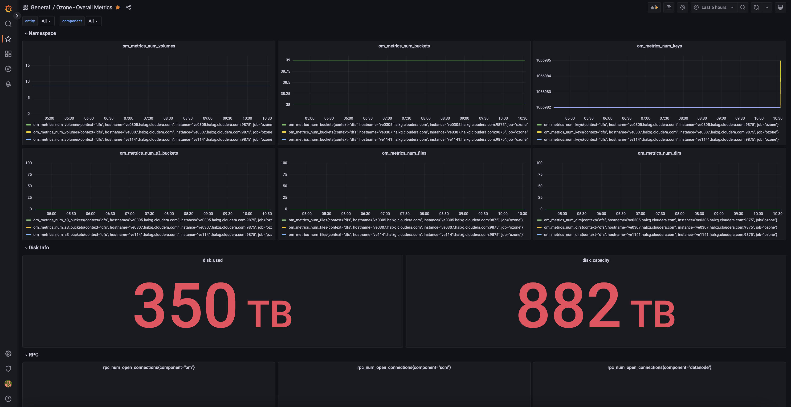
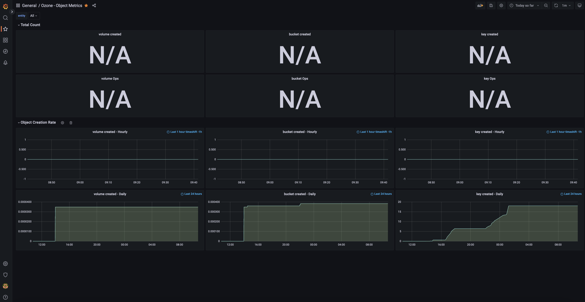
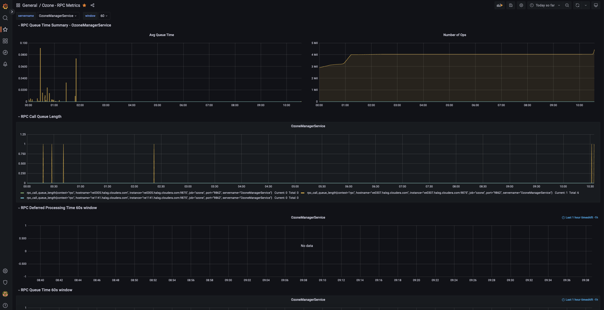

Observability
Ozone provides multiple tools to get more information about the current state of the cluster.
Prometheus
Ozone has native support for Prometheus integration. All internal metrics (collected by Hadoop metrics framework) are published under the /prom HTTP endpoint. (For example under http://localhost:9876/prom for SCM).
The Prometheus endpoint is turned on by default but can be turned off by the hdds.prometheus.endpoint.enabled configuration variable.
In a secure environment the page is guarded with SPNEGO authentication which is not supported by Prometheus. To enable monitoring in a secure environment, a specific authentication token can be configured
Example ozone-site.xml:
<property>
<name>hdds.prometheus.endpoint.token</name>
<value>putyourtokenhere</value>
</property>
Example prometheus configuration:
scrape_configs:
- job_name: ozone
bearer_token: <putyourtokenhere>
metrics_path: /prom
static_configs:
- targets:
- "127.0.0.1:9876"
Grafana
Once Prometheus is up and running, Grafana can be configured to monitor and visualize Ozone metrics.
Add Prometheus as a data source
In the Grafana web UI, go to Add Data Sources and then select Prometheus.
Enter the Prometheus hostname/port in the HTTP. For example, http://localhost:9094 (verify the port used by looking at Prometheus command line flags -web.listen-address. The port can also be found from Prometheus web UI → Status → Command-Line Flags.)
Choose Prometheus type: Prometheus
Choose Prometheus version: 2.37.x
Finish the setup by clicking on Save and Test.
Import a Grafana dashboard for Ozone
Apache Ozone comes with a default Grafana dashboard. Follow the instructions below to import it:
Download dashboard json:
wget https://raw.githubusercontent.com/apache/ozone/master/hadoop-ozone/dist/src/main/compose/common/grafana/dashboards/Ozone%20-%20Overall%20Metrics.json
Open Grafana portal and click on Dashboards on the left and select Import.
Click at Upload JSON file and select the file Ozone - Overall Metrics.json that was just downloaded.
The dashboard is now imported.

Repeat the same for Object Metrics dashboard and RPC Metrics dashboard. (For more dashboards, including Create/Read/List/Delete Key, OM Snapshot, OM CommitIndex, OM RocksDB, S3 Object, RPC, JVM and Memory Metrics, see this folder.)


Distributed tracing
Distributed tracing can help to understand performance bottleneck with visualizing end-to-end performance. Ozone makes use of OpenTelemetry API for tracing and uses otlp with Grpc format for sending traces. jaeger tracing library as collector can collect traces from Ozone over default port 4317 (as default).
Tracing is turned off by default, but can be turned on with hdds.tracing.enabled from ozone-site.xml
<property>
<name>hdds.tracing.enabled</name>
<value>true</value>
</property>
Below are the configuration steps for setting the collector endpoint and sampling strategy. Set these environment variables to be set for each Ozone component (OM, SCM, datanode) and for the Ozone client to enable tracing.
OTEL_EXPORTER_OTLP_ENDPOINT=http://localhost:4317
OTEL_TRACES_SAMPLER_ARG=0.01
This configuration will record 1% of the requests to limit the performance overhead.
ozone insight
Ozone insight is a swiss-army-knife tool to for checking the current state of Ozone cluster. It can show logging, metrics and configuration for a particular component.
To check the available components use ozone insight list:
> ozone insight list
Available insight points:
scm.node-manager SCM Datanode management related information.
scm.replica-manager SCM closed container replication manager
scm.event-queue Information about the internal async event delivery
scm.protocol.block-location SCM Block location protocol endpoint
scm.protocol.container-location SCM Container location protocol endpoint
scm.protocol.security SCM Block location protocol endpoint
om.key-manager OM Key Manager
om.protocol.client Ozone Manager RPC endpoint
datanode.pipeline More information about one ratis datanode ring.
Configuration
ozone insight config can show configuration related to a specific component (supported only for selected components).
> ozone insight config scm.replica-manager
Configuration for `scm.replica-manager` (SCM closed container replication manager)
>>> hdds.scm.replication.thread.interval
default: 300s
current: 300s
There is a replication monitor thread running inside SCM which takes care of replicating the containers in the cluster. This property is used to configure the interval in which that thread runs.
>>> hdds.scm.replication.event.timeout
default: 30m
current: 30m
Timeout for the container replication/deletion commands sent to datanodes. After this timeout the command will be retried.
Metrics
ozone insight metrics can show metrics related to a specific component (supported only for selected components).
> ozone insight metrics scm.protocol.block-location
Metrics for `scm.protocol.block-location` (SCM Block location protocol endpoint)
RPC connections
Open connections: 0
Dropped connections: 0
Received bytes: 1267
Sent bytes: 2420
RPC queue
RPC average queue time: 0.0
RPC call queue length: 0
RPC performance
RPC processing time average: 0.0
Number of slow calls: 0
Message type counters
Number of AllocateScmBlock: ???
Number of DeleteScmKeyBlocks: ???
Number of GetScmInfo: ???
Number of SortDatanodes: ???
Logs
ozone insight logs can connect to the required service and show the DEBUG/TRACE log related to one specific component. For example to display RPC message:
>ozone insight logs om.protocol.client
[OM] 2020-07-28 12:31:49,988 [DEBUG|org.apache.hadoop.ozone.protocolPB.OzoneManagerProtocolServerSideTranslatorPB|OzoneProtocolMessageDispatcher] OzoneProtocol ServiceList request is received
[OM] 2020-07-28 12:31:50,095 [DEBUG|org.apache.hadoop.ozone.protocolPB.OzoneManagerProtocolServerSideTranslatorPB|OzoneProtocolMessageDispatcher] OzoneProtocol CreateVolume request is received
Using -v flag the content of the protobuf message can also be displayed (TRACE level log):
ozone insight logs -v om.protocol.client
[OM] 2020-07-28 12:33:28,463 [TRACE|org.apache.hadoop.ozone.protocolPB.OzoneManagerProtocolServerSideTranslatorPB|OzoneProtocolMessageDispatcher] [service=OzoneProtocol] [type=CreateVolume] request is received:
cmdType: CreateVolume
traceID: ""
clientId: "client-A31DF5C6ECF2"
createVolumeRequest {
volumeInfo {
adminName: "hadoop"
ownerName: "hadoop"
volume: "vol1"
quotaInBytes: 1152921504606846976
volumeAcls {
type: USER
name: "hadoop"
rights: "200"
aclScope: ACCESS
}
volumeAcls {
type: GROUP
name: "users"
rights: "200"
aclScope: ACCESS
}
creationTime: 1595939608460
objectID: 0
updateID: 0
modificationTime: 0
}
}
[OM] 2020-07-28 12:33:28,474 [TRACE|org.apache.hadoop.ozone.protocolPB.OzoneManagerProtocolServerSideTranslatorPB|OzoneProtocolMessageDispatcher] [service=OzoneProtocol] [type=CreateVolume] request is processed. Response:
cmdType: CreateVolume
traceID: ""
success: false
message: "Volume already exists"
status: VOLUME_ALREADY_EXISTS
Under the hood ozone insight uses HTTP endpoints to retrieve the required information (/conf, /prom and /logLevel endpoints). It’s not yet supported in secure environment.